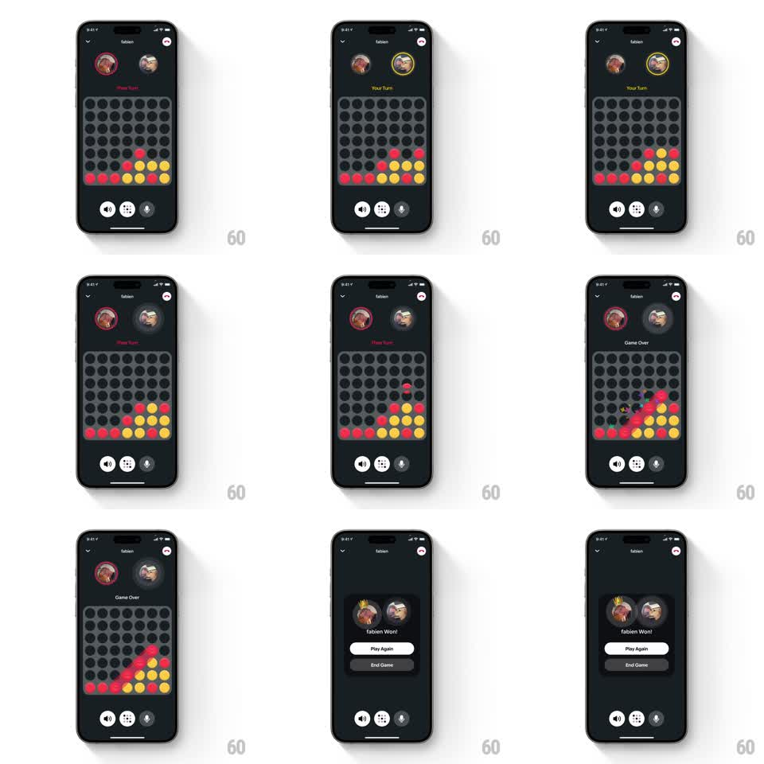

Media
Frame-by-frame

Rebuild this animation 1:1: Honk's Four-in-a-Row win sequence - the winning disc drops, the connected four light up, "Game Over" lands, and a crown drops and bounces onto the winner's avatar above the "fabien Won!" card.

Rebuild this animation 1:1: Honk's Four-in-a-Row win sequence - the winning disc drops, the connected four light up, "Game Over" lands, and a crown drops and bounces onto the winner's avatar above the "fabien Won!" card. ## Integration Integration: stack-agnostic spec - springs given as stiffness/damping, timed motions as duration + curve; map every value to your framework and animation library of choice. ## Scene Dark in-call game screen vs "fabien": both avatars at top (active player ringed in yellow), "Your Turn"/"Their Turn" label, the 7x6 grid filled with red and yellow discs, call controls at the bottom. End state: "Game Over" label, the winning four discs glowing, then a game-over card with crowned winner avatar, "fabien Won!", white "Play Again" pill, dark "End Game" button. ## Motion spec Pattern: winning-drop with glow highlight and crown drop. - The winning disc falls into its column (gravity drop, 300ms ease-in) with a landing bounce (scaleY 1 -> 0.85 -> 1, 150ms). - The four connected discs pulse with a glow sweep (brightness +40%, sweeping along the line, 500ms, then a steady gentle pulse 1.2s loop); other discs dim (opacity 0.5). - "Game Over" replaces the turn label (crossfade, 200ms). - A crown drops from above onto the winner's avatar (translateY -120pt -> 0 with gravity, 400ms) and bounces twice (spring ~280/12, squash on each contact: scaleY 0.8, 120ms each), settling tilted ~10deg. - The end card then slides up (spring ~300/24): avatars stacked (winner first, crowned), "fabien Won!", Play Again and End Game buttons staggering in (80ms apart, translateY 12pt + fade, 250ms). ## Calibration - The crown lands on the avatar before the card covers the grid - celebration first, UI second. - The glow sweep follows the winning line's direction (diagonal, horizontal, or vertical). ## Reduced motion Winning discs highlight statically; crown fades onto the avatar. ## Don't miss - The loser avatar dims/desaturates on the end card. - Play Again is the white primary pill; End Game is secondary dark.